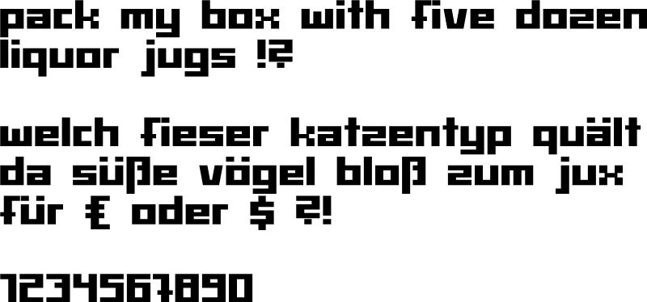

Baerenzwinger Font
This font is inspired by old hand-made letters found in Dresden, Germany, and used is by Studentenclub Bärenzwinger e.V.:
http://postimage.org/image/hy2s2i5t1/
Source code for Fontforge (http://fontforge.org/) as well as compiled font in different formats are provided:
┬ Baerenzwinger.sdf (Fontforge source file)
├ fonts_bin/
│ ├ Baerenzwinger.otf (OpenType Format)
│ ├ Baerenzwinger.svg (Scalable Vector Graphic)
│ ├ Baerenzwinger.ttf (TrueType Format)
│ └ Baerenzwinger.woff (Web Open Font Format)
└ pics/
└ Pangramm_Baerenzwinger_Font.png

Bärenzwinger is a registered wordmark of Studentenclub Bärenzwinger e.V. in Germany.
see LICENSE